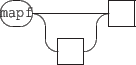

Next: 11.1.3 Distributing data to
Up: 11.1 The 'signal' static
Previous: 11.1.1 Signal messages.
Contents
Index
11.1.2 Composing signals in parallel.
Composing signals in parallel produces a signal which value at a time t is a vector of the composed signals values. Thus an additional read-only attribute is defined on parallel signals : the signal dimension which is size of the signals vector. Note that the dimension property holds also for simple signals.
The format of the messages for parallel signals is the following:

where
![\begin{rail}
signal :
[4] identifier
\vert [5] float32
\end{rail}](img64.gif)
- [1] defines a new signal composed of the signals given as parameters. A signal parameter is defined as:
- [4] an identifier i.e. a signal name referring to an existing signal in the signal node.
- [5] or as a float value. This form is equivalent to an anonymous constant signal holding the given value.
- [2] sets the values of the signals using a projection string. See section 11.1.3 p.
![[*]](crossref.gif) .
.
- [3] in addition to the get format defined for signals, a parallel signal supports the get dimension message, that gives the number of simple signals in parallel. The dimension of a simple signal is 1.
EXAMPLE
Putting a signal y and constant signals 0.01 0. 1. 1. 1. in parallel:
|
/ITL/scene/signal/mySig set y 0.01 0. 1. 1. 1.
|
Querying the previously defined parallel signal:
/ITL/scene/signal/mySig get
will give the following output:
/ITL/scene/signal/mySig set y 0.01 0. 1. 1. 1.
|
NOTE
For a parallel signal:
- the get size message gives the maximum of the components size.
- the get default message gives the default value of the first signal.
Next: 11.1.3 Distributing data to
Up: 11.1 The 'signal' static
Previous: 11.1.1 Signal messages.
Contents
Index
Grame - INScore project